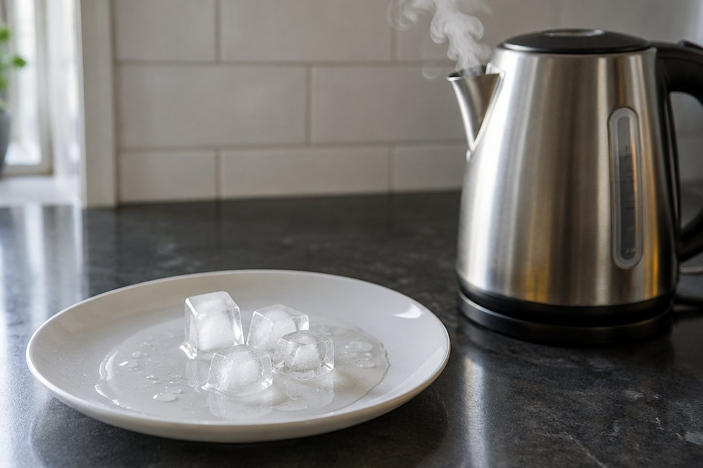

전체 단원 › 4학년 1학기 › 과학 › 물의 상태 변화
물은 어떻게 얼음과 수증기로 변할까?

냉동실에 넣은 물은 얼음이 되고, 끓는 냄비에서는 김이 올라와요. 물은 어떻게 이렇게 모습을 바꿀까요?
물의 세 가지 상태
물은 세 가지 상태로 있어요. 단단하고 모양이 일정한 '얼음(고체)', 흐르고 담는 그릇에 따라 모양이 바뀌는 '물(액체)', 눈에 보이지 않는 '수증기(기체)'예요.
물은 온도에 따라 얼음, 물, 수증기로 상태가 바뀌어요. 주전자에서 나오는 하얀 김은 사실 수증기가 식어서 생긴 아주 작은 물방울이에요.
물이 얼 때와 얼음이 녹을 때
물이 얼어 얼음이 되면 부피(차지하는 공간)는 늘어나지만, 무게는 변하지 않아요. 그래서 물을 가득 채운 유리병을 얼리면 병이 깨질 수 있어요.
반대로 얼음이 녹아 물이 되면 부피는 줄어들고 무게는 그대로예요.
추운 겨울에 수도관 속 물이 얼면 부피가 늘어나 수도관이 터지기도 해요.
물이 수증기가 되는 두 가지 방법
물 표면에서 물이 천천히 수증기로 변하는 것을 '증발'이라고 해요. 젖은 빨래가 마르는 것이 증발이에요.
물을 가열하면 물 표면뿐 아니라 물속에서도 기포(거품)가 생기며 빠르게 수증기로 변하는데, 이것을 '끓음'이라고 해요. 증발보다 끓음이 훨씬 빨라요.
어항의 물이 며칠 지나면 조금씩 줄어드는 것은 증발 때문이에요.
수증기가 물이 되는 응결
공기 중의 수증기가 차가운 물체 표면에 닿아 물방울로 변하는 것을 '응결'이라고 해요.
차가운 음료수 컵 겉면에 물방울이 맺히는 것은 컵 안의 물이 새어 나온 것이 아니라, 공기 중 수증기가 응결한 거예요.
추운 날 따뜻한 방 안의 창문 안쪽에 물방울이 맺히는 것도 응결이에요.
핵심 낱말
- 얼음
- 물의 고체 상태로, 단단하고 모양이 일정함
- 수증기
- 물의 기체 상태로, 눈에 보이지 않음
- 증발
- 물 표면에서 물이 수증기로 변하는 것
- 끓음
- 물 표면과 물속에서 물이 수증기로 빠르게 변하는 것
- 응결
- 수증기가 차가운 물체에 닿아 물방울로 변하는 것
한 줄 정리
- 물은 온도에 따라 얼음(고체), 물(액체), 수증기(기체)로 상태가 바뀌어요.
- 물이 얼면 부피는 늘어나고 무게는 그대로예요.
- 물이 수증기가 되는 것은 증발과 끓음, 수증기가 물이 되는 것은 응결이에요.
학교 교육과정 연결
- [4과10-01] 물이 세 가지 상태로 변할 수 있음을 알고, 우리 주변에서 예를 찾을 수 있다.
- [4과10-02] 물이 얼 때, 얼음이 녹을 때, 물이 증발할 때와 끓을 때, 수증기가 응결할 때의 변화를 관찰할 수 있다.